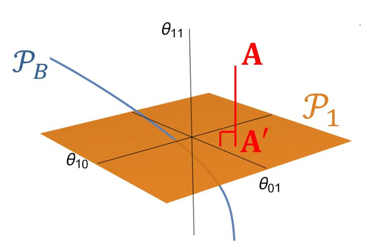

Kazu Ghalamkari
Hi, my name is Kazu Ghalamkari. I reserach Machine Learning theory at
National Institute of Informatics
at Tokyo, Japan
About Me
Publications
Gallery
Notes

NII Open House 2020
2020.6.14
国立情報学研究所のオープンハウス2020の「研究者と話そう」セッションでポスター発表をしてきました！
Read more →